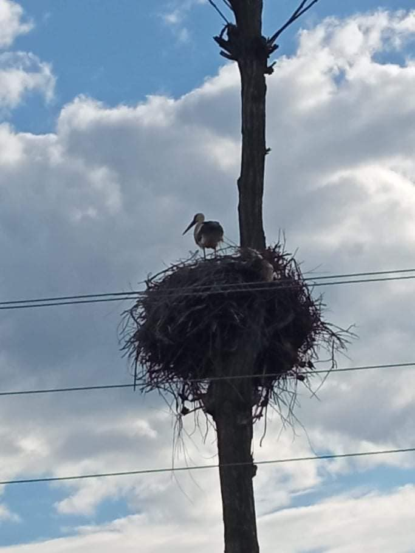

Așa arată timpul
Istoria bisericii din satul Todirești

Ziua sportului

Cocostârcii din satul meu

Cocostârcul sau barza albă – o pasăre destul de frumoasă.Această specie a dat naștere la
multe legende,dintre care cea mai cunoscută este legenda conform căreia bebelușii sunt aduși
de berze.
Nu întâmplător ,în mitologia greacă,barza este pasărea zeiței Hera,protectoarea mamelor care
își alaptează pruncii.
În popor se spune că dacă vezi primăvara un cocostârc, vei fi singuratic toată vara. Cine va
distruge un cuib de cocostârc,va păți o nenorocire.Desigur,sunt niște superstiții,dar anume
așa înțelepciunea populară a încercat să protejeze aceste păsări superbe.
În simbolismul creștin,barza este un simbol al Bunei Vestiri,a minunatei vești prin care
Fecioara Maria află că va da naștere lui Hristos.
Cuiburile de cocostârci sunt o mândrie și pentru satul nostru Todirești,este ca o
binecuvântare de la Dumnezeu.Aceste păsări ne-au ales pe noi și an de an,decenii în șir,se
întorc în locurile dragi pentru ași crește puii,a petrece vara alături de noi,a ne bucura cu
prezența lor.
Cu toții știm unde se află aceste cuiburi de cocostîrci,dar poate mai puțin știm istoria
lor.
Cu peste 60 ani în urmă,o pereghe de cocostârci ,a construit un cuib în copacul de salcâm a
gospodarului Bulubica Gheorghe.Ani la rând reveneau la cuib,își creșteau liniștiți
puii,bucurând copii de prin mahala care-i așteptau cu drag,cât și sătenii.
Când gospodarul a hotărât să taie copacul,s-a gândit mai întâi la familia de cocostârci.
Împreună cu Ion Cojocaru au hotărât să sudeze un suport din metal ,pe care l-au instalat pe
pilonul din fața porții gospodarului.Cuibul din copac a fost trecut pe carcasa din fier .La
întoarcere cocostârcii au acceptat noua lor “locuință”,astfel continuându-și
activitatea.Oameni cu suflet mare,adevărați gospodari ai acestui sat,care au contribuit la
păstrarea frumosului,a naturii.Anul acesta familia de cocostârcii își crește următoarea
generație de pui.
Puțin mai în vale,în grădina gospodarului Rusu Vitalie,se află un alt cuib de
cocostârci.După cum ne-a relatat și vecinii ,cuibul are peste 30 ani.Cu câțiva ani în
urmă,cuibul a fost distrus de un vânt puternic,dar păsările cu multă străduință , au reușit
să-l reconstruiască din nou.În fiecare an,se întorc de la mii de kilometri,tocmai din
Africa,anume în sat la noi,fiindcă aici e și casa lor .Aceste păsări împreună repară
cuibul,clocesc ouăle pe rând,hranesc puii cât sunt mici,apoi continuă chiar și o vreme să-i
hrănească după ce puii părăsesc cuibul.
O familie tânără de cocostârci,de șase ani își crește noi generații de pui în cuibul
construit în grădina lui Dumitru Caluga.În fiecare primăvară copilașii din mahala îi
întâmpină cu mare drag.A devenit deja o tradiție pentru satul nostru să întâmpinăm și să
petrecem cocostârcii.
Realizat:Bîrzoi Natalia, 27.06.2020